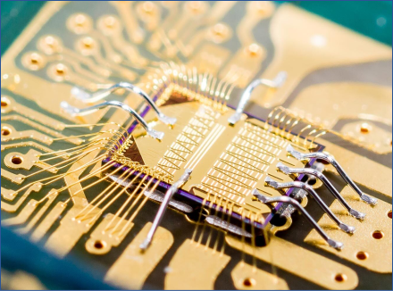
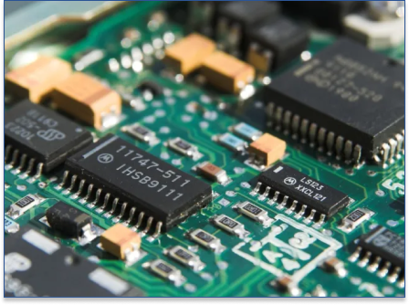
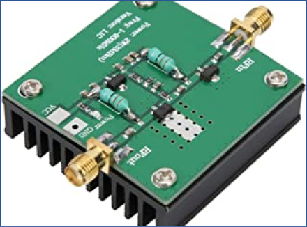

Analog IC design, RF/Microwave IC design, mixed signal IC design analog asic design, wireless asic design and modules design, development and supply from Signal Processing Group Inc. Highly cost effective services with extremely low risk.
Our Services and Products
ASICS or application specific integrated circuits are a very useful class of semiconductor product that allows the engineer or manager to precisely specify an application or function and order the device from a design house. Preferably from our company Signal Processing Group Inc.


